Capítulo 9. Implementação
A implementação é a única fase do desenvolvimento de software que não é opcional. Independentemente de quão bem os requisitos tenham sido capturados ou de quão cuidadosamente a arquitetura tenha sido projetada e revisada, os sistemas de software precisam ser implementados em código para alcançar seus objetivos. A arquitetura é usada para capturar decisões importantes de design sobre um sistema, utilizando princípios e conhecimentos sólidos de engenharia para aumentar a confiança de que as qualidades do sistema-alvo correspondem às expectativas de seus stakeholders. Para imbuir essas qualidades no sistema alvo, a implementação deve ser derivada de sua arquitetura.
Em termos de implementação, a arquitetura é tanto prescritiva quanto restritiva. É prescritivo no sentido de que dá aos implementadores orientação sobre o que produzir — como estruturar módulos de código, como eles devem ser interconectados e como devem se comportar. É restritivo no sentido de que suas diretrizes — especialmente aquelas especificadas no estilo arquitetônico — dizem aos desenvolvedores o que eles não podem fazer: as formas de comunicação que são proibidas, os tipos de comportamentos ou estados do sistema que não são permitidos, e assim por diante.
O problema de relacionar arquitetura à implementação é de mapeamento. Conceitos definidos no nível da arquitetura devem estar diretamente conectados a artefatos no nível da implementação. Essa correspondência não é necessariamente um a um. Por exemplo, em geral, um componente ou conector de software será implementado usando muitos artefatos de código e recursos. Da mesma forma, uma única biblioteca de software pode ser compartilhada entre várias implementações de componentes (desde que seu modo de uso não viole regras de estilo). Quando esse mapeamento não é mantido, pode ocorrer degradação arquitetônica — especificamente, o desvio gradual da implementação de um sistema em relação à sua arquitetura. Isso geralmente torna o software mais difícil de entender e manter, e dificulta alcançar ou manter as qualidades incorporadas pela arquitetura.
Implementar corretamente um sistema para que a arquitetura sobreviva na implementação requer uma compreensão bem formada de como os conceitos da arquitetura (e do estilo arquitetônico) se mapeiam em tecnologias de implementação como linguagens de programação, ambientes de desenvolvimento, bibliotecas e componentes reutilizáveis, middleware e modelos de componentes. Tecnologias de implementação como middleware e bibliotecas de componentes podem ajudar, mas também podem atrapalhar: quase sempre vêm com suas próprias suposições que podem influenciar ou atrapalhar decisões arquitetônicas tomadas anteriormente. Até conceitos que tomamos como garantidos, como programação orientada a objetos, podem ter influências arquitetônicas. Neste capítulo, discutimos técnicas e tecnologias para criar e manter mapeamentos entre arquitetura e implementação.
Também apresentamos e focamos em um conceito conhecido como framework de implementação de arquitetura, que é um software que faz a ponte entre arquiteturas e tecnologias de implementação. Discutimos como identificar, avaliar e criar novos frameworks. Também relacionamos frameworks a outras tecnologias semelhantes, como middleware e frameworks de componentes.
Resumo deCapítulo 9
CONCEITOS
Aqui, discutiremos conceitos e questões relacionadas à implementação baseada em arquitetura.
O Problema do Mapeamento
Implementar uma arquitetura é um problema de mapeamento — especificamente, mapear decisões de design para construtos de implementação específicos que realizam essas decisões. Do ponto de vista da qualidade do software, esse mapeamento é uma forma derastreabilidade. Em geral, o termo rastreabilidade pode se referir a qualquer mecanismo para conectar diferentes artefatos de software; Neste contexto, queremos dizer especificamente rastreabilidade da arquitetura à implementação. Escolher como criar e manter esse mapeamento é fundamental no desenvolvimento baseado em arquitetura. Aqui, discutimos mapeamentos de implementação para vários tipos de decisões de design discutidas emCapítulo 6.
Componentes e Conectores. Decisões de projeto sobre componentes e conectores dividem a funcionalidade da aplicação em elementos discretos de computação e comunicação. Em geral, ambientes de programação fornecem mecanismos como pacotes, bibliotecas ou classes que são usados para particionar funcionalidades em implementações. Aqui, o desafio é manter um mapeamento entre as partições estabelecidas pelos componentes e conectores em nível de arquitetura e as partições estabelecidas pelos pacotes, bibliotecas, classes e assim por diante em nível de implementação. Se as implementações não forem particionadas de acordo com os limites de componentes e conectores especificados na arquitetura, então os limites dos componentes podem se romper e causar deriva e erosão arquitetônica.
Interfaces. No nível arquitetônico, interfaces podem ser especificadas de muitas maneiras diferentes. Se as interfaces forem especificadas em termos de assinaturas de métodos ou funções semelhantes às da linguagem de programação de destino, o mapeamento é um processo direto de traduzir as assinaturas de método para código. No entanto, se a definição da interface em nível de arquitetura for mais complexa — especificando um protocolo ou conjunto de transições de estado — então será necessário um esforço maior para criar uma implementação apropriada.
Configurações. No nível arquitetônico, configurações são frequentemente especificadas como grafos ligados de componentes e conectores. Esses grafos especificam e restringem como os componentes e conectores interagem por meio de suas interfaces. As mesmas interações e topologias devem ser preservadas na implementação. Muitas linguagens de programação incluem recursos que permitem que um módulo se refira a outro módulo por meio de sua interface, em vez de sua implementação (por exemplo, embora interfaces explicitamente definidas como em Java, ou tabelas de ponteiros de função em C). Além disso, algumas linguagens de programação e sistemas middleware permitem o uso de reflexão ou descoberta dinâmica para conectar e desconectar componentes em tempo de execução. Quando esses construtos estão disponíveis, muitas vezes é possível que os links em nível de implementação entre componentes e conectores sejam especificados independentemente dos próprios componentes e conectores, ou até mesmo gerados a partir da descrição da arquitetura.
Justificativa de Design. A justificativa de design é um construto que muitas vezes não tem um mapeamento específico para a implementação, já que não é algo que influencia diretamente a funcionalidade da aplicação. Frequentemente, a melhor forma de manter a justificativa do design durante a implementação é escrevendo-a em comentários do código-fonte ou documentação externa.
Propriedades Dinâmicas (Comportamento). Dependendo de como são modeladas, especificações comportamentais em nível arquitetônico podem facilitar ou facilitar a implementação. Algumas especificações comportamentais podem ser traduzidas diretamente em esqueletos de implementação ou até implementações completas. No entanto, isso nem sempre é o caso; Especificações comportamentais formais frequentemente carecem de vinculações a construtos em nível de linguagem de programação e, portanto, é difícil determinar se uma especificação comportamental está realmente implementada corretamente. Algumas especificações comportamentais são mais úteis para gerar planos de análise ou testes do que para implementações.
Propriedades Não Funcionais. Implementar propriedades não funcionais é talvez uma das proposições mais difíceis na engenharia de software. A melhor forma de conseguir isso é por meio de uma combinação de técnicas — documentar justificativas, inspeções, testes, estudos de usuários e assim por diante. Essa dificuldade é a razão pela qual refinar propriedades não funcionais em decisões de design funcional (quando possível) é tão importante.
Mapeamento de ida e ida e volta
Arquiteturas e implementações inevitavelmente precisam coevoluir. Arquiteturas podem evoluir devido a requisitos em mudança ou maior compreensão, e essas mudanças devem ser propagadas para a implementação. Da mesma forma, descobertas e mudanças feitas durante a implementação afetarão a arquitetura. Manter arquitetura e implementação sincronizadas é um desafio, envolvendo questões de processo, suporte a ferramentas e cultura organizacional. Aspectos do mapeamento que carecem de forte rastreabilidade costumam ser os primeiros a divergir.
Manter o mapeamento arquitetura-implementação diante das mudanças depende do processo de mudança. Uma opção é exigir que todas as mudanças comecem pela arquitetura — a arquitetura é alterada primeiro, os mapeamentos para a implementação são usados, e então a implementação é atualizada por meio de ferramentas automatizadas ou processos manuais. Isso é, na prática, um mapeamento unidirecional. Outra opção é permitir que mudanças sejam iniciadas tanto na arquitetura quanto na implementação. Nesse caso, ferramentas automatizadas ou processos manuais ainda são usados para atualizar o outro artefato. Esse é um mapeamento bidirecional.
Mapeamentos bidirecionais são melhores para detectar e resolver derivas e erosão arquitetônicas, mas também são mais complexos e caros para criar e manter. Isso às vezes é conhecido como problema de ida e volta porque as mudanças precisam ser mapeadas da arquitetura para a implementação e vice-versa. Diversas estratégias para manter mapeamentos de ida e volta são discutidas neste capítulo.
Frameworks de Implementação de Arquitetura
Ao desenvolver um sistema, uma abordagem ideal seria definir primeiro a arquitetura e depois selecionar tecnologias de implementação (linguagens de programação, bibliotecas de software, sistemas operacionais, etc.) que mais se encaixem nas suas necessidades. Esse ideal é difícil de alcançar — linguagens de programação raramente têm suporte explícito para construções em nível de arquitetura. Além disso, a seleção das tecnologias de implementação geralmente será guiada por fatores extrínsecos ou acidentais, como custo, maturidade, suporte à plataforma, cultura organizacional e até especificações ou padrões de requisitos impostos externamente ou equivocados.
Uma estratégia importante para preencher a lacuna entre conceitos em uma arquitetura e as tecnologias de implementação de um sistema é usar (ou desenvolver) um framework de implementação de arquitetura (Malek, Mikic-Rakic e Medvidović 2005).
Definição. Um framework de implementação de arquitetura é
um software que atua como uma ponte entre um estilo arquitetônico particular e
um conjunto de tecnologias de implementação. Ele fornece elementos-chave do
estilo arquitetônico no código, de uma forma que auxilia os desenvolvedores a
implementar sistemas que se conformem às prescrições e restrições do estilo.
De longe, o exemplo mais comum de framework de arquitetura em uso hoje é a biblioteca Standard I/O no UNIX (Universidade da Califórnia 1986) e sistemas operacionais similares. Embora poucos desenvolvedores possam reconhecê-lo como tal, na verdade ele é uma ponte entre o estilo pipe-and-filter (que é orientado a fluxo de caracteres e concorrente) e linguagens de programação procedurais e não concorrentes, como C. Ele fornece conceitos arquitetônicos, como acesso a interfaces por meio de fluxos de caracteres legíveis e graváveis, de uma forma que se adapta ao ambiente de destino (por exemplo, chamadas de procedimentos). Uma discussão mais completa sobre como a biblioteca padrão de E/S serve como estrutura arquitetônica aparece mais adiante neste capítulo.
Estruturas arquitetônicas são, na prática, tecnologias que auxiliam os desenvolvedores a se conformarem a um determinado estilo arquitetônico. No entanto, a maioria dos frameworks não impede que os desenvolvedores sair das limitações do estilo. Por exemplo, só porque um programa UNIX importa a biblioteca padrão de E/S não significa que o programa funcionará em um estilo pipe-and-filter; ele pode ler e gravar todos os seus dados a partir de arquivos de disco nomeados e ignorar completamente os fluxos padrão de entrada e saída.
É possível desenvolver aplicações em quase qualquer estilo arquitetônico sem o uso de um framework arquitetônico. No entanto, isso geralmente significa entrelaçar os conceitos arquitetônicos ao longo da implementação e dificulta o desenvolvimento e a manutenção deles. Nos casos em que não existe um framework para uma combinação específica de linguagem de programação/sistema operacional, os desenvolvedores geralmente acabam implementando um conjunto de bibliotecas e ferramentas de software que equivalem a um framework de arquitetura de qualquer forma.
Uma pergunta natural a se fazer é: Como as estruturas são representadas em modelos arquitetônicos? Do ponto de vista arquitetônico, estruturas são frequentemente consideradas um substrato subjacente a todos os componentes e conectores. Portanto, é incomum ver um framework modelado como um componente ou conector na própria arquitetura. No entanto, frameworks frequentemente incluem implementações para componentes e conectores comuns (como aqueles definidos pelo estilo — um conector pipe ou um event bus, por exemplo) que servem como implementações para componentes e conectores especificados na arquitetura.
Mesmo estilo, frameworks diferentes
Um único estilo arquitetônico pode ser sustentado por vários frameworks alternativos diferentes. Isso pode acontecer por vários motivos. Primeiro, diferentes linguagens de programação e plataformas de implementação geralmente exigem frameworks distintos. Por exemplo, aplicações Java usam classes no pacote java.io (Harold 2006) para realizar entrada e saída de fluxo; essas classes são como o Java implementa funções semelhantes à biblioteca padrão de E/S em C. Programadores em C++ podem usar tanto a biblioteca iostream orientada a objetos quanto a biblioteca procedural stdio para o mesmo propósito. Cada um desses frameworks de arquitetura conecta o mesmo estilo arquitetônico (pipe-and-filter) para diferentes tecnologias de implementação (Java, C++ ou C).
Às vezes, múltiplos frameworks para a mesma combinação de estilo, linguagem de programação e sistema operacional são desenvolvidos. Normalmente, esses frameworks se distinguem com base em diferentes qualidades ou capacidades. Um bom exemplo é o pacote New I/O (java.nio) em Java (Hitchens 2002). Assim como o pacote java.io mais antigo, o java.nio permite que programas leiam e escrevam fluxos de dados de várias fontes. No entanto, o novo pacote de I/O oferece capacidades aprimoradas, como suporte nativo para buffering, melhor controle sobre sincronização e a capacidade de usar técnicas rápidas de transferência de dados, como mapeamento de memória. Os usuários podem escolher a estrutura apropriada para sua aplicação com base nas necessidades de qualidade dessas aplicações.
Avaliação de Estruturas
Frameworks, como qualquer sistema de software, podem variar amplamente em quase qualquer dimensão de qualidade. Por isso, muitas estruturas são frequentemente desenvolvidas para suportar o mesmo estilo arquitetônico no mesmo ambiente. Avaliar um framework, então, é semelhante a avaliar qualquer componente importante de software.
Suporte à Plataforma
Um framework de arquitetura reúne três elementos-chave: um estilo arquitetônico, uma linguagem de programação e um sistema operacional. Um dos critérios mais básicos para avaliar um framework, então, é o suporte à plataforma. Uma vez identificado um estilo arquitetônico, a disponibilidade de frameworks arquitetônicos para uma combinação de linguagem de programação alvo/sistema operacional pode ser determinada. Se o projeto tem liberdade para selecionar a plataforma de implementação com base na arquitetura (o que está se tornando cada vez mais raro, já que sistemas de software têm mais chances de rodar em plataformas já existentes), então a disponibilidade de frameworks de arquitetura adequados deve ser um critério para a seleção da plataforma.
Fidelidade
Uma qualidade particularmente importante em frameworks de implementação de arquitetura é a fidelidade, especificamente a fidelidade ao estilo arquitetônico alvo. Para ser útil, um framework não precisa fornecer suporte direto à implementação para cada decisão de design em seu estilo alvo; por exemplo, pode fornecer mecanismos de comunicação, mas deixar a concorrência da arquitetura para os implementadores individuais dos componentes. Além disso, frameworks frequentemente fornecem suporte para seguir restrições estilísticas, mas não para aplicação da lei; ou seja, o framework facilitará para os implementadores seguirem as restrições do estilo, mas não impedirá explicitamente que eles quebrem as restrições. Estruturas mais fiéis geralmente são melhores para prevenir ou evitar deriva e erosão arquitetônicas. No entanto, isso geralmente tem um custo porque os frameworks são mais complicados, maiores ou menos eficientes.
Suposições de Correspondência
Estilos arquitetônicos induzem certas decisões de design e restrições nas aplicações. Frameworks podem fazer a mesma coisa — idealmente, as decisões e restrições induzidas pelo framework são as mesmas que as induzidas pelo estilo alvo. No entanto, estilos frequentemente deixam muitos aspectos de um sistema sem restrições, e os frameworks têm a responsabilidade adicional de apoiar a atividade concreta de implementação. Por essas razões, frameworks podem induzir restrições adicionais nas aplicações. Por exemplo, um framework pode assumir que o sistema será instanciado e configurado apenas pelo framework, ou que componentes e conectores individuais não iniciarão seus próprios threads de controle, ou que cada componente de software na arquitetura pode ser associado a um módulo na linguagem de programação de destino.
Problemas podem ocorrer quando as suposições de um framework entram em conflito com as suposições de outras tecnologias de implementação usadas em um projeto. Considere uma framework de arquitetura para uma linguagem de programação orientada a objetos. Esse framework pode exigir que cada componente tenha uma classe principal derivada de uma classe base fornecida pelo framework. No entanto, o projeto pode incluir vários elementos da interface gráfica, e o kit de ferramentas da interface gráfica pode exigir que as classes de elementos da interface gráfica estendam as classes base fornecidas pelo conjunto de ferramentas. Se a linguagem de programação não suporta múltipla herança (como Java), há uma séria incompatibilidade entre o toolkit da interface gráfica e o framework de implementação. Essa situação pode nem ser um descompasso arquitetônico; é um descompasso de decisões específicas de implementação. No entanto, estratégias precisam ser identificadas para aliviar essa situação.
Assim, ao avaliar um framework de arquitetura, é importante enumerar as suposições que ela faz e compará-las com as suposições feitas por outros componentes, kits de ferramentas, bibliotecas e ambientes com os quais a aplicação irá interagir. Às vezes, soluções alternativas podem ser desenvolvidas, especialmente se o descompasso for um detalhe de implementação de baixo nível. No entanto, se o descompasso for arquitetônico, isso pode colocar em dúvida a compatibilidade do próprio estilo arquitetônico com a escolha das tecnologias de implementação para a aplicação implementada.
Eficiência
Em geral, frameworks de arquitetura adicionam uma camada de funcionalidade entre a aplicação e o hardware em que ela roda. Um dos principais perigos de introduzir novas camadas é a diminuição da eficiência da aplicação. Essa preocupação é especialmente importante ao lidar com frameworks de arquitetura, já que eles tendem a permear a aplicação. Um framework de arquitetura pode mediar toda a comunicação entre componentes de um sistema, por exemplo, ou ditar a política de concorrência para toda a aplicação. Quando isso acontece, a eficiência deve ser um critério de seleção primário para um framework.
Antes de se comprometer com um framework, é um exercício útil rodar benchmarks no framework com parâmetros derivados da aplicação alvo para entender o limite superior do desempenho da aplicação usando o framework. Por exemplo, se um framework pode trocar 10.000 mensagens por minuto em um aplicativo fictício cujo único propósito é trocar mensagens o mais rápido possível, não é realista construir um aplicativo com esse framework que troque 20.000 mensagens por minuto.
Outras Considerações
Como mencionado acima, as questões envolvidas na seleção de um framework de arquitetura são muito semelhantes às envolvidas na seleção de qualquer componente de software. Pode-se argumentar que, por terem um efeito tão presente nas aplicações, eles são o elemento mais crítico de todos a serem selecionados. Qualidades como tamanho, custo, facilidade de uso, disponibilidade do código-fonte, confiabilidade, robustez, portabilidade e muitas outras são todas importantes na escolha de um framework.
Middleware, Modelos de Componentes e Frameworks de
Aplicação
Existe um espectro de tecnologias para integrar componentes de software e fornecer serviços além dos fornecidos por uma determinada combinação de linguagem de programação e sistema operacional. Essas tecnologias recebem vários nomes diferentes: middleware, modelos de componentes (ou frameworks de componentes) e frameworks de aplicação. Vamos nos referir a esses sistemas coletivamente como "middleware". Exemplos populares incluem CORBA (Object Management Group 2001), JavaBeans (JavaSoft 1996), COM/DCOM/COM+ (Sessions 1997), .NET, Java Message Service (JavaSoft 2001), várias tecnologias de Web Services, entre outras.
Existem muitas semelhanças entre frameworks de arquitetura e middleware. Ambos oferecem aos desenvolvedores serviços de implementação que não estão disponíveis nativamente na linguagem de programação subjacente ou no sistema operacional. Por exemplo, o middleware CORBA oferece serviços como chamadas remotas de procedimentos (RPCs) e a capacidade de descobrir dinamicamente as interfaces dos objetos. O modelo de componentes do JavaBeans introduz um novo conceito no Java: o grão, um objeto que segue certas diretrizes de interface que tornam possível compor grãos com mais facilidade.
Frameworks de implementação de arquitetura são uma forma de middleware. A diferença entre middleware tradicional e frameworks arquitetônicos está no foco no estilo arquitetônico. Frameworks de implementação de arquitetura são implementados especificamente para apoiar o desenvolvimento em um ou mais estilos arquitetônicos. Aqui, o estilo é o principal artefato que impulsiona a tecnologia de implementação. Middleware é criado com base nos serviços fornecidos, geralmente sem considerar o estilo da aplicação em desenvolvimento.
Como Middleware e Frameworks de Componentes Podem Induzir
um Estilo
Middleware frequentemente limita aplicações de maneiras semelhantes a frameworks de arquitetura. Middleware frequentemente influencia como a funcionalidade de uma aplicação é dividida em componentes, como esses componentes interagem (frequentemente por meio de serviços fornecidos por middleware semelhantes a conectores) e também a topologia da aplicação. Essas são geralmente preocupações arquitetônicas. Nesse sentido, middleware pode induzir uma arquitetura ou estilo arquitetônico em uma aplicação (Di Nitto e Rosenblum 1999).
CORBA [e tecnologias semelhantes a CORBA, como COM e RMI (Grosso 2001)] são um bom exemplo de como middleware pode influenciar arquiteturas de aplicações. O CORBA divide uma aplicação em objetos que podem residir em diferentes hosts. Objetos que participam da aplicação expõem seus próprios serviços por meio de interfaces fornecidas, cujas assinaturas de método são especificadas em uma linguagem de definição de interface (IDL). Os objetos buscam outros objetos por meio de serviços como serviços de nomeação ou serviços de negociação, e então se chamam mutuamente usando um padrão de solicitação-resposta, passando apenas parâmetros serializáveis através dos limites da interface. Juntas, essas restrições compõem um estilo arquitetônico que pode ser chamado de estilo "objetos distribuídos".
Se os stakeholders do sistema escolheram o estilo de objetos distribuídos para sua aplicação, então middleware semelhante ao CORBA pode servir como uma estrutura de arquitetura ideal. No entanto, raramente as coisas são tão simples assim. Diante de uma aplicação para design, os arquitetos de software precisam tomar centenas de decisões de design. Escolher o estilo arquitetônico da aplicação é uma das decisões mais importantes que eles tomarão. No entanto, arquitetos experientes também conhecem muitas tecnologias de middleware diferentes e as vantagens dessas tecnologias. Os serviços oferecidos por muitas tecnologias de middleware podem ser sedutores, e frequentemente as capacidades de um determinado sistema middleware influenciam o processo de tomada de decisão do arquiteto. Arquitetos devem ter especial cuidado para evitar que uma tecnologia middleware influencie demais seus projetos.
Resolvendo Incompatibilidades entre Estilos
Arquitetônicos e Middleware
Dois grandes conflitos podem surgir entre estilos arquitetônicos e middleware:
Ao selecionar tecnologias de implementação, é fundamental entender que os benefícios de qualidade proporcionados por essa tecnologia frequentemente vêm com implicações arquitetônicas, que podem não ser compatíveis com o design da sua arquitetura. Por exemplo, o CORBA oferece os benefícios da distribuição e reflexão, mas em uma forma que induz sistemas baseados em objetos que se comunicam por meio de chamadas de procedimento de solicitação e resposta. Isso pode causar certas desvantagens arquitetônicas, como aumento da latência e sincronização. Permitir que a escolha do middleware influencie a arquitetura é o contrário: é o rabo abanando o cachorro. A arquitetura deve influenciar sua escolha de middleware.
Quando há um descompasso arquitetônico entre middleware e o estilo arquitetônico alvo, várias opções estão disponíveis:
Mude o estilo. O estilo arquitetônico pode ser alterado para se adequar melhor ao middleware. Isso deve ser feito apenas quando os benefícios de usar o middleware superam os custos de adaptá-lo para funcionar com o estilo alvo.
Troque o middleware. O middleware pode ser adaptado para se adequar melhor ao estilo arquitetônico. Essa estratégia pode ser difícil porque os pacotes middleware costumam ser grandes, complexos ou proprietários.
Desenvolva código de cola. Frameworks de arquitetura podem ser construídos sobre middleware, aproveitando as partes do middleware que combinam e contornando as partes que não combinam. Dessa forma, nem o estilo nem o middleware em si precisam ser adaptados.
Ignore serviços de middleware desnecessários. Alguns pacotes de middleware ou frameworks de componentes podem fornecer uma série de serviços que abrangem muitos aspectos do desenvolvimento de aplicações. No entanto, pode ser possível usar um subconjunto desses serviços seletivamente e ignorar os serviços que não são compatíveis (ou relevantes para) o estilo arquitetônico alvo.
Esconda o Middleware. Desenvolvedores usam middleware porque ele oferece certos serviços. Se esses serviços não forem necessariamente transversais e puderem ser aplicados em pontos específicos da arquitetura, então pode ser possível ocultar o middleware dentro de componentes ou conectores individuais. Por exemplo, se o CORBA está sendo usado apenas para facilitar a comunicação entre componentes heterogêneos rodando em hosts diferentes, todo o código relacionado ao CORBA pode ser isolado dentro de conectores individuais que precisam de comunicação entre hosts. Outros serviços CORBA, como busca e descoberta dinâmica de interfaces, podem ser usados inteiramente dentro do contexto dos conectores ou simplesmente ignorados.
Uso de Middleware para Implementar Conectores
Muitos pacotes de middleware fornecem serviços que são efetivamente centrados na comunicação: eles fornecem diferentes mecanismos para que componentes heterogêneos se comuniquem. Se melhorar a comunicação em uma arquitetura é um objetivo, então usar middleware como base para implementar conectores, em vez de toda a aplicação, pode permitir que um sistema evite que as suposições do middleware se infiltrem e corrompam as decisões de design da arquitetura.
Nesse cenário, os arquitetos devem primeiro definir e identificar as capacidades necessárias para um conector, idealmente sem se importar com como ele será implementado. Depois, deve ser selecionado middleware que possa fornecer todas (ou a maioria) dessas capacidades e também se adequar aos outros objetivos do projeto. Se as capacidades não forem fornecidas diretamente pelo middleware, elas devem ser implementadas como parte da implementação do conector. O resultado é um conector que atende à necessidade arquitetônica, em vez de um que se curva às suposições feitas por desenvolvedores de middleware.
Por exemplo, pode ser necessário um conector que ofereça suporte à passagem de mensagens entre um componente C++ rodando no Linux e um componente Java rodando no Windows. Dois pacotes middleware orientados a mensagens podem estar disponíveis: um pacote comercial que tem suporte a C++ e Java para ambas as plataformas, mas é proprietário e caro, e uma solução de código aberto que suporta ambas as plataformas, mas apenas componentes em C++. Se os orçamentos estiverem apertados, a solução open-source pode ser selecionada, e um adaptador Java Native Interface (JNI) (Liang 1999) pode ser escrito para permitir que o componente Java se comunique com o middleware.
Construindo uma Nova Estrutura
Ocasionalmente, circunstâncias motivam o desenvolvimento de uma nova estrutura de implementação de arquitetura. Boas razões para desenvolver um novo framework incluem:
Desenvolver uma estrutura de arquitetura é uma tarefa que não deve ser tomada de ânimo leve. Esses frameworks impactarão quase todas as partes das aplicações construídas sobre eles e podem ser fator decisivo para o sucesso desses aplicativos, portanto, deve ser tomado grande cuidado em seu design. Desenvolver um framework de arquitetura é, em muitos aspectos, como desenvolver qualquer outra aplicação — requer o desenvolvimento de requisitos, um projeto, contribuições de muitos stakeholders, avaliação de qualidade e assim por diante. Assim, quase tudo o que dissemos neste livro sobre o desenvolvimento de aplicações em geral pode ser aplicado a frameworks de arquitetura. No entanto, existem algumas diretrizes adicionais que podem ser aplicadas especificamente ao desenvolvimento de estruturas:
Tenha um bom entendimento do estilo primeiro. Desenvolver uma estrutura arquitetônica com uma compreensão incompleta do estilo arquitetônico alvo é uma receita para o desastre. Não haverá padrão para medir o arcabouço de fidelidade ou completude. Um conjunto claro e conciso das regras e restrições do estilo arquitetônico deve ser desenvolvido antes do início do projeto da estrutura.
Limite a estrutura a questões abordadas no estilo arquitetônico. Na maior medida possível, um framework de implementação de arquitetura deve ser independente de qualquer aplicação alvo específica. Incluir recursos específicos da aplicação (que não fazem parte do estilo) em um framework limita a reutilização do framework e borra a linha entre o que faz parte da aplicação e o que faz parte do framework.
Escolha o escopo do framework. Frameworks de arquitetura bem implementados são ativos reutilizáveis valiosos para as organizações que os desenvolvem. Os desenvolvedores de um novo framework devem decidir como o framework será reutilizado no futuro para definir adequadamente suas capacidades. Por exemplo, um determinado estilo arquitetônico pode ser adequado a arquiteturas dinâmicas — aquelas que mudam sua estrutura em tempo real. No entanto, as aplicações alvo iniciais construídas nesse estilo podem não aproveitar isso. Se implementar ou não dinamismo no framework depende de quão provável é que o dinamismo seja necessário em um projeto futuro (ou em uma versão futura do projeto atual). Isso leva ao seguinte conselho relacionado.
Evite engenharia excessiva. Ao construir novos frameworks, é tentador incluir todo tipo de funcionalidade inteligente ou útil, independentemente de as aplicações alvo realmente usá-las. Isso é especialmente verdadeiro porque frameworks frequentemente (e devem ser) desenvolvidos separadamente de aplicações específicas. Essas capacidades adicionais podem envolver camadas e níveis adicionais de abstração e ter efeitos significativos no framework, especialmente em sua usabilidade e desempenho.
Limite a sobrecarga para desenvolvedores de aplicações. Cada framework impõe um ônus adicional aos implementadores de aplicações — incluir código padrão nos componentes, implementar um conjunto padrão de comportamentos que o framework possa usar, e assim por diante. À medida que os encargos para os desenvolvedores de aplicações aumentam, os frameworks se tornam mais pesados e menos suportáveis. Limitar suas obrigações adicionais (seja por meio do design do framework ou suporte a ferramentas) pode mitigar isso.
Desenvolva uma estratégia para recursos tradicionais e prontos para uso. Quase qualquer aplicação está obrigada a incluir elementos (componentes, conectores, middleware, etc.) que não foram desenvolvidos pensando no framework. Sem uma estratégia documentada ou apoiada por ferramentas para integrar esses recursos externos, os desenvolvedores serão forçados a criar seus próprios mecanismos de forma ad hoc. Isso pode causar problemas à medida que os desenvolvedores reinventam a roda (ou pior, reinventam rodas diferentes). Desenvolvedores de frameworks devem considerar seriamente os tipos de recursos externos que podem ser incorporados nas aplicações e estabelecer estratégias para integrar esses recursos e distribuir com o framework.
Simultaneidade
No passado, muitos sistemas intensivos em software podiam ser projetados para rodar em um único computador com um único processador. Hoje, até mesmo computadores individuais possuem processadores multicore ou multithread que podem realizar múltiplas tarefas simultaneamente. Além disso, muitas aplicações modernas incluem algum tipo de distribuição em uma rede, onde cada host de rede terá um ou mais processadores. Em um futuro muito próximo, os sistemas terão que ser projetados para concorrência: múltiplas tarefas no sistema executando simultaneamente (Magee e Kramer 2006). A concorrência geralmente é implementada com uma variedade de estratégias; em um único host, geralmente são empregados múltiplos threads ou processos do sistema operacional. Em uma rede, diferentes hosts necessariamente executam processos independentes que precisam trabalhar juntos e implementar o comportamento do sistema como um todo.
A maioria dos estilos arquitetônicos tem alguma noção de concorrência, seja simples sincronização ou multiprocessamento complexo. Pipe-and-filter, um dos estilos mais simples, foi desenvolvido para aproveitar a concorrência e processar resultados parciais em paralelo; foi uma melhoria em relação aos sistemas de processamento em lote que não conseguiam fazer isso. Muitos dos estilos arquitetônicos identificados emCapítulo 4têm disposições específicas para quais elementos podem (ou devem) rodar simultaneamente.
Muitos frameworks de implementação de arquitetura e pacotes de middleware têm o gerenciamento de concorrência como uma de suas principais funcionalidades. Mais adiante neste capítulo, duas implementações de exemplo do Lunar Lander tanto nos estilos arquitetônicos pipe-and-filter quanto C2 são apresentadas. Em ambos os casos, a concorrência é gerenciada inteiramente pelo framework ou sistema operacional subjacente. No caso do sistema pipe-and-filter, cada filtro executa em um processo de sistema operacional concorrente; no caso do sistema C2, cada componente e conector roda em seu próprio thread de controle.
Uma quantidade crescente de pesquisas está sendo direcionada para novos modelos de programação para apoiar a concorrência. No entanto, programas simultâneos ainda são difíceis de escrever. Se o estilo arquitetônico possui uma política de concorrência bem adaptada à aplicação alvo, o suporte à concorrência pode ser implementado principalmente no framework da arquitetura. Bugs de concorrência podem levar a condições de corrida e impasse — duas das falhas mais difíceis de reproduzir e rastrear. Encapsular a implementação da concorrência em código de framework ou middleware bem testado pode ajudar a mitigar os riscos de impasse e condições de corrida (embora não possa eliminá-los).
Tecnologias Generativas
Uma proposta de "solução mágica" que recebeu bastante atenção ao longo dos anos é a ideia de que implementações de sistemas de software podem ser muito mais eficientes e eficazes ao gerar (partes de) essas implementações diretamente a partir de seus projetos. De fato, esse é o foco da iniciativa de Arquitetura Orientada por Modelos do Object Management Group (OMG) (Mukerji e Miller 2003), descrita emCapítulo 16, assim como muitas tecnologias generativas que foram desenvolvidas ao longo dos anos.
Como a geração pode derivar implementações (parciais) diretamente de projetos, a geração é uma estratégia atraente para manter o mapeamento da arquitetura para o código. No entanto, geralmente não é uma solução abrangente (ou fácil) de implementar corretamente. Algumas estratégias generativas que podem ser empregadas no desenvolvimento centrado na arquitetura são descritas no texto a seguir.
Geração de implementações completas de sistemas ou elementos. Dada uma especificação arquitetônica suficiente, incluindo especificações estruturais, de interface e comportamentais completas, é possível gerar uma implementação completa para um componente, conector ou até mesmo para um sistema inteiro. Quando essa estratégia é empregada, o desvio e a erosão arquitetônicas podem ser efetivamente eliminados, já que as implementações são simplesmente transformações da arquitetura. Na prática, porém, isso é extremamente difícil, devido à grande quantidade de detalhes necessários para gerar implementações — as especificações comportamentais de um componente, por exemplo, geralmente têm a mesma complexidade que o código que implementa o componente.
Geração de esqueletos ou interfaces. Também é possível gerar implementações parciais de elementos ou sistemas a partir de modelos arquitetônicos. Por exemplo, se as interfaces forem bem descritas, é possível gerar esqueletos de código para cada serviço ou método na interface, permitindo que os implementadores preencham o comportamento. Da mesma forma, se especificações comportamentais parciais estiverem disponíveis (na forma de cartas de estado, por exemplo), autômatos de estados finitos podem ser gerados em código, deixando o comportamento para cada estado a cargo dos programadores.
Geração de Composições. Em situações em que já existe uma biblioteca de implementações reutilizáveis de componentes e conectores e sistemas são simplesmente compostos a partir dessa biblioteca, modelos arquitetônicos podem ser usados para gerar as configurações e o código de colagem necessários para conectar os elementos em um sistema completo. Essa estratégia é geralmente mais eficaz no contexto da engenharia de software específica de domínio (vejaCapítulo 15).
Em qualquer esforço generativo, o problema do round-tripping torna-se primordial. No contexto da geração, abordagens unidirecionais permitem que um artefato seja gerado a partir de outro – por exemplo, para que o código seja gerado a partir de modelos arquitetônicos. Abordagens de ida e volta permitem que mudanças no artefato alvo sejam refletidas automaticamente no artefato de origem. Por exemplo, em uma abordagem unidirecional, um componente em um modelo arquitetônico pode resultar na criação de um novo pacote Java contendo arquivos de classes. Em uma abordagem de ida e volta, a criação de um novo pacote Java pode resultar também na geração de um novo componente no modelo arquitetônico. Em geral, isso requer manter alguns metadados no código gerado — geralmente em comentários especialmente formatados. Embora abordagens de ida e volta sejam preferíveis a abordagens unidirecionais, geralmente são difíceis de implementar corretamente, especialmente quando ferramentas de modelagem arquitetônica e desenvolvimento de código não estão bem integradas (como frequentemente acontece).
Garantindo a Consistência entre Arquitetura e
Implementação
Mesmo com o uso de uma estrutura arquitetônica, raramente é óbvio se uma implementação realmente está em conformidade com sua arquitetura prescrita. Determinar se esse é o caso geralmente requer uma combinação de técnicas, incluindo inspeção e revisão manuais. Existem várias estratégias que podem facilitar essa tarefa.
Crie e mantenha links de rastreabilidade. A existência de links, ou mapeamentos explícitos, de elementos arquitetônicos para elementos de implementação pode ajudar os desenvolvedores a determinar se cada elemento arquitetônico possui uma implementação correspondente e vice-versa. Ter esses links facilita determinar se algo foi ignorado inadvertidamente. Se esses links forem para partes concretas de um modelo de arquitetura e/ou artefatos concretos de implementação, então a verificação automatizada de links pode ser usada para determinar se algum link quebrou devido a mudanças no modelo ou na implementação. Essa estratégia funciona bem para artefatos concretos, mas mapear diferentes níveis de abstração ou elementos que não possuem uma ligação direta entre arquitetura e implementação pode ser complicado.
Inclua o modelo arquitetônico. Um modelo arquitetônico pode conter informações que podem ser usadas diretamente na implementação de um sistema. Por exemplo, uma descrição da estrutura de um sistema em um modelo (indicando como os componentes devem ser instanciados e conectados) pode ser usada como um artefato de implementação. Uma ferramenta pode ser usada para extrair informações sobre componentes, conectores e sua topologia diretamente da descrição da arquitetura e ligar o sistema dessa forma automaticamente. Isso pode ser feito durante a construção ou durante a inicialização do sistema. Em ambos os casos, uma forma de correspondência arquitetura-implementação-correspondência é garantida, pois a estrutura da aplicação implementada é derivada diretamente do modelo arquitetônico.
Gerar implementação a partir da arquitetura. Dependendo da forma e do conteúdo de um modelo arquitetônico, pode ser possível gerar partes de uma implementação diretamente a partir do modelo usando ferramentas automatizadas. Se o conjunto de componentes em um sistema for especificado e o estilo arquitetônico da aplicação for conhecido, é possível gerar esqueletos de componentes para um framework de implementação da arquitetura alvo. Se informações comportamentais também estiverem disponíveis no modelo, pode ser possível gerar algumas ou todas as implementações desses componentes a partir do modelo.
ESTRUTURAS EXISTENTES
Esta seção apresenta exemplos de frameworks de implementação de arquitetura que foram implementados para vários estilos arquitetônicos, mostra como eles satisfazem nossa definição de framework e avalia seus pontos fortes e fracos.
Estruturas para o Estilo Arquitetônico Pipe-and-Filter
Muitos programadores usaram um framework de arquitetura sem necessariamente estar cientes dele, especificamente um framework de arquitetura para o estilo pipe-and-filter. Quase toda linguagem de programação implementada em todos os principais sistemas operacionais vem acompanhada de uma biblioteca ou módulo que serve como estrutura de arquitetura para o estilo pipe-and-filter.
O Framework Padrão de E/S
A linguagem de programação C é single-threaded, utiliza fluxo de controle de chamada e retorno para procedimentos e funções, e geralmente armazena e recupera todos os dados da memória por endereço. Como, então, a linguagem C é tornada compatível com o estilo pipe-and-filter, onde filtros podem rodar em paralelo, geralmente são ativados quando dados ficam disponíveis, e onde filtros recuperam e enviam dados por meio de fluxos de bytes? A resposta é um framework de arquitetura chamado biblioteca padrão de entrada-saída (I/O), também conhecida pelo nome abreviado, stdio.
Lembre-se de que um framework de arquitetura serve como uma ponte entre as necessidades de um estilo arquitetônico e os serviços fornecidos pela linguagem de programação e pelo sistema operacional. Aqui, a linguagem de programação C fornece serviços genéricos: construtos de controle, a capacidade de ler e escrever na memória, e assim por diante. O sistema operacional, por outro lado, oferece uma série de serviços úteis: concorrência no nível do processo[10]bem como pelo menos dois fluxos de dados distintos para cada processo ("entrada padrão" e "saída padrão").
A biblioteca stdio fornece aos programas C acesso aos fluxos padrão de entrada/saída fornecidos pelo sistema operacional por meio de uma API procedural que trata os fluxos da mesma forma que arquivos em um dispositivo de armazenamento de acesso sequencial, como um disco rígido. Rotinas de baixo nível como getchar (...) e putchar (...) permitem que programas leiam e escrevam um único byte por vez; rotinas mais complexas, como scanf (...) e printf (...) permitem a leitura e escrita de quantidades maiores de dados formatados. Dependendo de como os fluxos são implementados no sistema operacional subjacente, diferentes implementações de stdio podem empregar técnicas como buffering para melhorar o desempenho. Implementações diferentes também podem ter capacidades diferentes em relação ao bloqueio: se bytes forem escritos em um fluxo de saída, e o próximo filtro no pipeline não estiver pronto para consumir esses bytes, então o stdio pode fazer a operação de escrita bloquear (fazer o chamador esperar) até que o receptor esteja pronto, ou pode armazenar os dados em buffer e permitir que o chamador continue.
Certamente essa não é a única forma de implementar tal estrutura. Por exemplo, pode-se imaginar uma estrutura onde bytes chegando à entrada padrão acionavam o início da execução do programa, em vez do sistema operacional invocar o principal método do programa. Com esse entendimento, agora podemos avaliar o framework stdio em termos das qualidades que discutimos anteriormente.
Suporte de Plataforma. A interface stdio é construída especificamente para a linguagem de programação C, e sua implementação vem com todas as implementações da linguagem. Bibliotecas semelhantes podem existir em outras linguagens diferentes. Implementações do framework em plataformas com pouco ou nenhum suporte ao sistema operacional para fluxos como mecanismo de comunicação entre processos podem ser mais complicadas ou podem não suportar aplicações pipe-and-filter.
Fidelidade. O suporte da biblioteca stdio para streams é bom, mas um programa que o usa não está limitado a funcionar como filtro. Os programas são livres para ignorar tanto os fluxos padrão de entrada quanto de saída, e fazer entrada/saída por outros mecanismos (por exemplo, interação direta com o teclado ou usando bibliotecas de interface gráfica para saída de dados).
Coincidindo com as Suposições. As suposições padrão da biblioteca stdio em relação a sistemas pipe-and-filter são que cada filtro será um processo de sistema operacional separado e os fluxos fornecidos pelo sistema operacional (entrada padrão e saída padrão) serão usados para comunicação. Se o aplicativo quiser usar pipe-and-filter de forma diferente (por exemplo, com filtros como partes de um aplicativo C rodando em um único processo, ou talvez usando um arquivo de disco como armazenamento intermediário), então o aplicativo precisa ser modificado de certa forma. Como a biblioteca stdio oferece interfaces praticamente idênticas para leitura e gravação em diferentes tipos de fluxos (fluxos de arquivos, fluxos em memória, fluxos interprocessos e assim por diante), isso amplia os tipos de aplicações pipe-and-filter que podem ser construídas com ela.
Eficiência. Se os filtros rodam simultaneamente (um dos principais benefícios de eficiência do pipe-and-filter em relação às arquiteturas sequenciais em lote) depende em grande parte de como o sistema operacional subjacente agenda o processo. Para sistemas operacionais de processo único, a saída precisa ser armazenada em memória compartilhada ou armazenamento secundário à medida que cada filtro roda sequencialmente. Em grande parte, a própria biblioteca stdio não tem controle sobre como isso é tratado.
O Marco java.io
A linguagem de programação Java é multithread, orientada a objetos, utiliza chamadas de método call-return para transferência de controle e agrupa código e dados dentro dos objetos. As classes de objeto usadas para construir aplicações pipe-and-filter em Java são encontradas no pacote java.io. Embora essas classes compartilhem um propósito com a biblioteca stdio da C, seu design é diferente. A biblioteca de classes java.io define duas classes base principais: InputStream, que permite que os chamadores leiam uma sequência de bytes, e OutputStream, que permite que os chamadores escrevam uma sequência de bytes. Cada um deles fornece um pequeno conjunto de métodos para ler e escrever bytes simples ou grupos de bytes, além de alguns métodos auxiliares para rebobinar dentro de um fluxo durante leitura e escrita de limpeza.
Essas classes base de baixo nível definem funcionalidade mínima para fluxos de bytes legíveis e graváveis. Essas classes não são usadas diretamente; em vez disso, são usadas subclasses. Em java.io, são fornecidos dois tipos de subclasses. Um conjunto fornece acesso a fontes e sumidouros de dados concretos: arquivos, sockets de rede, arrays de bytes em memória, e assim por diante. Além disso, três objetos distintos são fornecidos pelo ambiente de runtime: System.in, System.out e System.err, que são usados para ler e escrever nos fluxos padrão de entrada, saída e erro do processo do sistema operacional, e são usados para criar aplicações de pipe-and-filter multiprocesso. Outro conjunto de subclasses adiciona funcionalidades aos fluxos básicos de entrada e saída ao envolver esses fluxos de baixo nível. Por exemplo, BufferedInputStream e BufferedOutputStream adicionam buffers para melhorar o desempenho. DataInputStream e DataOutputStream adicionam métodos adicionais de interface a fluxos encapsulados que permitem a leitura e escrita de tipos básicos de dados Java (inteiros, floats, etc.). Com isso em mente, agora podemos avaliar java.io e compará-lo com a biblioteca stdio.
Suporte de Plataforma. A biblioteca java.io faz parte do conjunto padrão de pacotes Java e, portanto, está disponível em qualquer plataforma que possa rodar Java. Recursos específicos da plataforma, como o acesso aos fluxos padrão de entrada e saída do sistema operacional, são abstraídos.
Fidelidade. O suporte da biblioteca para fluxos é abrangente, mas, assim como no stdio, programas que usam essa biblioteca não precisam funcionar como filtro. Por outro lado, arquiteturas pipe-and-filter rodando dentro de um único programa são mais fáceis de construir com java.io devido à existência de fluxos que leem e gravam na memória, e classes de pipe em processo que permitem a conexão de fluxos em processo.
Coincidindo com as Suposições. A biblioteca java.io corresponde bem às suposições do estilo pipe-and-filter. Estruturas pipe-and-filter em processo podem ser construídas com relativa facilidade devido ao suporte inato do Java para threading e à capacidade de executar múltiplos filtros internos simultaneamente.
Eficiência. O Java oferece aos programadores controle detalhado sobre mecanismos de eficiência: buffers podem ser usados envolvendo um fluxo em um fluxo bufferizado, e threads podem ser explicitamente alocados para separar operações de E/S separadas de operações computacionalmente intensivas (o que pode aumentar o desempenho em máquinas multiprocessador). No entanto, com maior cooperação do sistema operacional, muitas vezes é possível alcançar uma eficiência ainda maior. Isso motivou a construção do pacote java.nio (New I/O), que pode aproveitar mecanismos mais rápidos.
Estruturas para o Estilo Arquitetônico C2
Construção de aplicações no estilo arquitetônico C2 [(Taylor et al. 1996) (vejaCapítulo 4)] difere significativamente da programação tradicional por chamadas de procedimentos e orientada a objetos. Ele impõe regras rigorosas sobre como as aplicações são construídas internamente e como os componentes dentro de uma aplicação se comunicam. Ele governa tanto as transferências de controle quanto os dados dentro de uma aplicação, e faz suposições sobre concorrência e threading. Por causa dessas diferenças, os frameworks são essenciais para o desenvolvimento eficaz do C2.
Os serviços fornecidos por uma estrutura C2 surgem das várias restrições do estilo arquitetônico C2. Por exemplo, o C2 exige que a funcionalidade da aplicação seja dividida em componentes discretos (para computação) e conectores (para comunicação). Portanto, frameworks C2 oferecem suporte, no nível da linguagem de programação, para que desenvolvedores de aplicações particionem suas funcionalidades em módulos. Componentes e conectores C2 se comunicam via mensagens assíncronas e devem operar como se funcionassem em threads de controle separados. Frameworks que suportam essa restrição devem fornecer um conceito de mensagem assíncrona e devem alocar (a partir do sistema operacional) ou simular (por meio de uma técnica como o escalonamento round-robin das atividades de uma única thread) múltiplas threads de controle.
Frameworks C2 foram desenvolvidos para muitas combinações de plataforma/linguagem. Frameworks C2 foram desenvolvidos para C++, Ada, Java e outras linguagens rodando Windows, UNIX, a Máquina Virtual Java e assim por diante. Vários frameworks Java C2 diferentes foram desenvolvidos, cada um com características distintas. Vamos comparar e contrastar um framework básico chamado Lightweight C2 Framework e um framework maior, porém mais configurável, chamado Flexible C2 Framework.
A Estrutura C2 Leve
O primeiro framework C2 implementado em Java é conhecido como framework Lightweight C2, implementado em apenas dezesseis classes (cerca de 3000 linhas) de código Java.
A Figura 1 mostra um conjunto selecionado de classes do Lightweight C2 Framework, bem como suas relações, como um diagrama de classes UML. Para implementar uma aplicação usando esse framework, os desenvolvedores criam implementações de componentes e conectores como subclasses das classes base abstratas Component ou Connector. Desenvolvedores também podem criar classes adicionais conforme necessário, que são chamadas por essas classes de componentes e conectores. As classes componente e conector se comunicam entre si usando apenas mensagens, que são instâncias das classes Request e Notification. O desenvolvedor então cria um programa principal que utiliza a interface da classe Architecture para instanciar e conectar os diversos componentes e conectores.
A Figura 9-1 mostra algumas das principais escolhas de design feitas pelos autores do framework. Os componentes e conectores C2 são implementados como classes Java que estendem classes base abstratas (Component e Connector) fornecidas pelo framework. As mensagens são codificadas como objetos com um nome de string e um mapa de propriedades string-para-objeto contendo o conteúdo da mensagem.
Certos aspectos do framework — como threading e fila de mensagens — ficam a cargo de componentes e conectores individuais. Duas políticas de threading estão disponíveis para os implementadores: Se os desenvolvedores de aplicações estenderem as classes base Component e Connector, uma única thread de aplicação atenderá toda a aplicação. Desenvolvedores que usam essa estratégia devem ter cuidado para não bloquear esse tópico e não travar suas aplicações sem querer. Se os desenvolvedores estendem as classes base ComponentThread e ConnectorThread, então cada componente ou conector recebe um thread independente de controle. Isso consome mais recursos, mas também reduz a possibilidade de impasse inadvertido. A fila de mensagens é gerenciada por meio de objetos Port, que são objetos capazes de receber mensagens recebidas para um componente ou conector. Note que ports são um conceito introduzido inteiramente por essa estrutura — eles não fazem parte do estilo C2 em si. O framework oferece apenas um tipo de porta: uma fila de primeiro a entrar primeiro a sair (FIFO). Com as portas FIFO, as mensagens são processadas na ordem de recebida; nenhuma mensagem recebe prioridade sobre qualquer outra. Os desenvolvedores são livres para implementar suas próprias portas não FIFO, desde que essas portas estendam a classe abstrata de Port.
Também é interessante notar que nem toda restrição do estilo C2 está refletida no framework. Por exemplo, nada no framework impõe a regra de que componentes e conectores devem agir como se rodassem em espaços de memória separados. Em uma aplicação de processo único, se um componente ou conector insere uma referência de objeto Java em um objeto de mensagem, outros componentes ou conectores podem modificar esse objeto diretamente sem enviar mensagens. Isso constituiria comunicação ilegal no estilo C2. No entanto, o Java não possui suporte para o conceito de espaços de memória separados em processo, então aplicar essa restrição em um framework seria proibitivamente caro. Isso representa uma situação em que fidelidade é trocada por eficiência e onde uma estrutura é usada para auxiliar, mas não para impor, implementações que estejam de acordo com o estilo alvo.
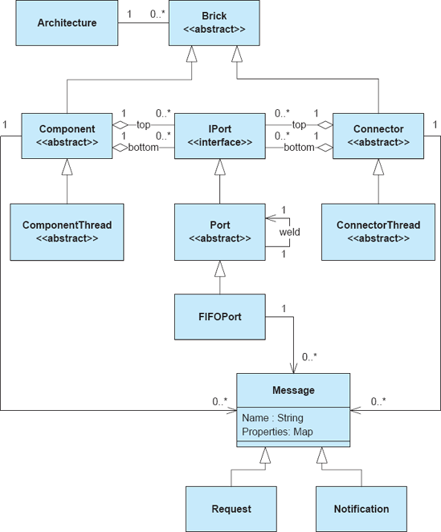
Figura 9-1. Classes e relacionamentos selecionados do Framework Lightweight C2.
A Estrutura Flexível C2
A Estrutura Flexível C2 foi desenvolvida posteriormente e incorpora mais aspectos do estilo arquitetônico diretamente na estrutura. Assim, é maior, com setenta e três classes (aproximadamente 8.500 linhas de código). A Figura 9-2 mostra um conjunto semelhante de classes selecionadas no framework Flexible C2. Desenvolvedores de aplicações que usam esse framework seguem um curso de ação semelhante ao que utilizam o Lightweight C2 Framework. Eles implementam primeiro componentes de aplicação e conectores como classes que implementam as interfaces Component e Connector. Essas classes trocam dados por meio de objetos que implementam a interface Message. Eles então escrevem uma classe principal que instancia, conecta e inicia esses componentes e conectores usando a interface ArchitectureControler.
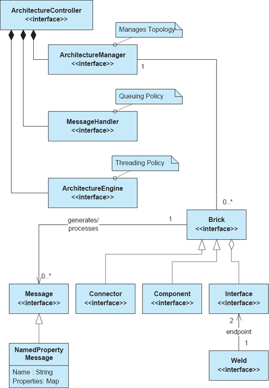
Figura 9-2. Selecionei classes selecionadas do Flexible C2 Framework e suas relações.
Uma diferença óbvia entre os dois frameworks é o uso generalizado de interfaces Java no Flexible C2 Framework para representar conceitos fundamentais em vez de classes base abstratas. Como linguagem de programação, o Java permite apenas uma única herança entre classes de objetos. No entanto, uma única classe pode implementar múltiplas interfaces. O uso de interfaces Java em vez de classes base abstratas torna o Flexible C2 Framework um pouco mais fácil de adaptar a diferentes contextos do que o Lightweight C2 Framework. Componentes, conectores e mensagens criados por desenvolvedores podem estender qualquer outra classe base, desde que implementem a interface apropriada. Algum código padrão é necessário para implementar cada interface, e assim o framework fornece classes base abstratas (não mostradas na Figura 9-2) para cada interface na situação comum em que classes desenvolvedoras não são obrigadas a estender uma classe base externa.
Outra diferença óbvia está na implementação das políticas de threading e fila de mensagens da aplicação. No Lightweight C2 Framework, essas políticas eram distribuídas por toda a aplicação em componentes individuais, conectores e portas. No Flexible C2 Framework, essas preocupações são centralizadas por meio de classes chamadas MessageHandlers, que definem políticas de fila, e ArchitectureEngines, que definem políticas de threading. Isso permite que os desenvolvedores definam e selecionem essas políticas em uma base de aplicação ampla.
A Figura 9-3 mostra como políticas de enfileiramento e threading podem ser conectadas a uma aplicação. As interfaces, MessageHandler e ArchitectureEngine, definem APIs internas comuns a todas as políticas de enfileiramento e threading. As classes base abstratas AbstractMessageHandler e AbstractArchitectureEngine implementam funções padrão comuns a todas as políticas de fila e threading. Por fim, o framework fornece várias políticas alternativas de enfileiramento concreto e threading que podem ser selecionadas para uma aplicação. As políticas disponíveis de fila incluem:
Uma Fila-Por-Interface. Cada interface (no estilo C2, interfaces superior ou inferior) tem sua própria fila de mensagens.
Uma Fila-por-Aplicação. Todas as mensagens da aplicação são armazenadas em uma única fila.
As políticas de threading disponíveis incluem:
Um fio por tijolo. Cada brick (componente ou conector) na arquitetura recebe seu próprio thread de controle para processar suas mensagens.
Pool de Fios. A aplicação recebe um conjunto constante de threads que são compartilhados entre todos os componentes. Quando um brick tem uma mensagem aguardando, uma thread é enviada para o brick para processar a mensagem. Quando o processamento de mensagens é concluído, a thread retorna ao pool.
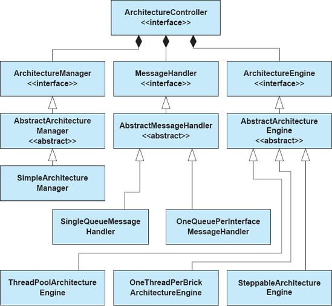
Figura 9-3. A implementação de políticas de fila e threading de mensagens plugáveis no Flexible C2 Framework.
Motor Steppable. Um caso especial da política de pool de threads, a aplicação recebe uma thread controlada por uma interface gráfica. Quando o usuário pressiona um botão de 'passo', a thread é despachada para processar uma única mensagem. Dessa forma, as aplicações podem ser depuradas com mais facilidade.
Todas essas políticas são permitidas dentro do estilo C2, mas afetam dramaticamente como as aplicações são desenvolvidas e a quantidade de componentes que os desenvolvedores precisam considerar ao escrever código. Por exemplo, seria relativamente difícil mudar uma aplicação Lightweight C2 Framework de uma thread por tijolo para uma política de threading passo, pois isso exigiria alterações no código de cada componente e conector. No Flexible C2 Framework, essa alteração pode ser feita em uma única linha de código na classe principal da aplicação. Ainda assim, políticas centralizadas e uniformes podem dificultar a implementação de aplicações em que diferentes componentes individuais e conectores se comportam de forma diferente em relação à enfileiramento e threading.
Ambos os frameworks C2 abordam subconjuntos semelhantes das restrições do estilo C2 — por exemplo, nenhum aborda explicitamente o requisito de que componentes e conectores não possam se comunicar por meio de memória compartilhada. Como explicado acima, esse requisito é simplesmente caro demais para implementar em Java.
Comparando os frameworks C2 Leves e Flexíveis
Como ambos os frameworks C2 abordam o mesmo estilo arquitetônico e a mesma plataforma, eles podem ser comparados diretamente ao longo de várias dimensões. A primeira é a dimensão técnica — examinar como cada estrutura suporta (ou não suporta) cada uma das restrições do estilo arquitetônico C2, como mostrado emTabela 9-1. Outra forma de comparar os frameworks é usar a rubrica que estabelecemos anteriormente, como mostrado emTabela 9-2.
Mesa 9-1. Suporte técnico ao estilo arquitetônico C2.
|
Restrição do Estilo C2 |
Suporte a Framework Leve |
Suporte a Estruturas Flexíveis |
|
A funcionalidade da aplicação deve ser dividida em componentes e conectores. |
Classes base abstratas são estendidas por desenvolvedores de aplicações para criar componentes ou conectores; toda a funcionalidade da aplicação deve ser implementada dentro ou chamada por essas classes base estendidas. |
Interfaces definem os requisitos para componentes e conectores; o código boilerplate é fornecido em classes base abstratas que implementam essas interfaces. Toda a funcionalidade da aplicação deve ser implementada dentro ou chamada por essas classes base estendidas. |
|
Todos os componentes e conectores se comunicam por meio de duas interfaces: superior e inferior. |
A classe base abstrata fornece os métodos sendRequest() e sendNotification() para emitir mensagens superior e inferior, respectivamente, e handleNotification() e handleRequest() para receber mensagens superior e inferior. |
A classe base fornece um método sendToAll() que recebe interface (top ou bottom) como parâmetro, e o método handle() que é chamado quando uma mensagem é recebida em qualquer interface. As mensagens são marcadas com a interface pela qual chegaram. |
|
Componentes e conectores devem operar como se funcionassem em seus próprios fios de controle. |
Threads são criados por classes base de componentes e conectores. |
As threads são controladas por um objeto central de política de threading chamado ArchitectureEngine. Diferentes engines podem fornecer políticas alternativas de threading. |
|
Mensagens enviadas para a interface superior de um componente ou conector devem ser recebidas na parte inferior do(s) componente(s) ou conector(es) conectado(s) e vice-versa. |
Os métodos sendRequest() e sendNotification() procuram componentes e conectores conectados e enfileiram diretamente mensagens em filas pertencentes a esses elementos. |
A política de enfileiramento de mensagens é centralizada em um objeto chamado MessageHandler. Os MessageHandlers garantem que as mensagens sejam depositadas em filas apropriadas para processamento. |
|
Componentes e conectores devem operar como se não compartilhassem memória; todas as mensagens trocadas devem ser serializáveis. |
Objetos mensagem são estruturados como conjuntos de propriedades de pares nome-valor, onde tanto nomes quanto valores são cadeias de caracteres. |
Todas as mensagens devem implementar a interface java.io.Serializable, mas não estão restritas a nenhum formato específico. Também é fornecida uma implementação de mensagens de conjunto de pares nome-valor. |
|
Os componentes podem ser conectados a no máximo um conector de cada lado; Conectores podem ser conectados a zero ou mais componentes ou conectores em cada lado. |
Conectar um componente a mais de um conector de qualquer lado resultará na desfeita da conexão anterior antes que a nova seja criada. |
Sem apoio explícito; Assume-se que os desenvolvedores verificam essa restrição. |
|
Os componentes podem fazer suposições sobre os serviços fornecidos acima, mas não suposições sobre os serviços fornecidos abaixo. |
Sem apoio explícito; Assume-se que os desenvolvedores construam componentes de uma forma que obedeça a essa restrição. |
Sem apoio explícito; Assume-se que os desenvolvedores construam componentes de uma forma que obedeça a essa restrição. |
Mesa 9-2. Critério de Comparação para Frameworks.
|
Preocupação |
Estrutura Leve |
Estrutura Flexível |
|
Suporte à plataforma |
Java Virtual Machine em múltiplas plataformas. |
Java Virtual Machine em múltiplas plataformas. |
|
Fidelidade |
Auxilia desenvolvedores a lidar com muitas restrições do estilo C2, mas não as aplica ativamente. |
Auxilia desenvolvedores a lidar com muitas restrições do estilo C2, mas não as aplica ativamente. |
|
Suposições de correspondência |
As classes principais de componentes e conectores devem herdar das classes base abstratas fornecidas; toda comunicação deve ser feita por mensagens que consistam em nomes de string e propriedades de pares nome-valor. |
As classes principais de componente e conector devem ser implementadas a partir das interfaces Java fornecidas; toda comunicação deve ser feita por mensagens, que podem estar em qualquer FOMAT serializável. |
|
Eficiência |
A estrutura é pequena e leve; pode usar apenas um único thread de controle, se desejado, mas isso pode causar um impasse da aplicação. |
O framework é maior, mas mais flexível; Pode selecionar entre várias políticas de fila e threading para ajustar a eficiência de cada aplicação. |
EXEMPLOS
Introduzimos muitas alternativas arquitetônicas para a aplicação do módulo lunar;Capítulo 4apresenta um catálogo de estilos arquitetônicos, com Lunar Lander projetado para se encaixar nas restrições de cada estilo. Aqui, vamos examinar como frameworks de arquitetura podem ser usados para auxiliar na construção de implementações funcionais do Lunar Lander em dois desses estilos: pipe-and-filter e C2.
Note que as seções a seguir incluirão exemplos de código mostrando implementações reais do Lunar Lander. Certas boas práticas de programação, como o uso de constantes de string externalizadas, verificação abrangente de exceções e valor nulo, e assim por diante, serão deixadas de fora por simplicidade. Implementações reais devem levar essas práticas em consideração, pois elas se aplicam igualmente ao desenvolver software baseado em arquitetura.
Implementando o módulo lunar no estilo pipe-and-filter usando a estrutura java.io
Lembre-se da introdução de uma arquitetura de módulo lunar estilo tubo e filtro deCapítulo 4, como mostrado emFigura 9-4. Aqui, o Lunar Lander é dividido em três componentes: o primeiro recebe a taxa de queima do usuário, o segundo calcula novos valores, e o terceiro devolve esses valores ao usuário. A comunicação entre os componentes é unidirecional e ocorre por meio de fluxos de caracteres, conforme exigido pelo estilo.
Assumindo que queremos implementar essa aplicação em Java, temos duas escolhas óbvias para frameworks de arquitetura: o pacote java.io e o pacote java.nio. Como a quantidade de dados transferidos é pequena e queremos uma implementação simples, implementaremos o sistema usando java.io. A próxima escolha que devemos fazer é implementar o sistema como um sistema em processo ou multiprocesso.
Em andamento. Em um sistema em processo, cada componente será implementado por uma ou mais classes Java. Esses se comunicarão por meio de fluxos internos, aproveitando classes de fluxo interno fornecidas pelo framework java.io. A configuração da aplicação precisará ser criada em um método principal de aplicação que escrevemos.
Multiprocesso. Em um sistema multiprocesso, cada componente será implementado por uma ou mais classes Java que compõem uma pequena aplicação. Eles se comunicarão por meio dos fluxos fornecidos pelo sistema operacional System.in e System.out, e o sistema operacional também fornecerá os conectores de tubos. A configuração da aplicação será feita na linha de comando.
Para simplificar, implementaremos a aplicação como um sistema multiprocesso, o que nos poupa de ter que escrever código adicional, criar nossos próprios pipelines e realizar tarefas como buffering de dados e threading. Os serviços internos do sistema operacional fornecerão buffers entre os filtros, bem como concorrência em nível de processo.
Figura 9-4. Lunar Lander no estilo arquitetônico de tubo e filtro.
A primeira tarefa na implementação da aplicação Lunar Lander é implementar os três filtros representados na arquitetura proposta. Como os filtros são componíveis de forma independente, isso pode ser feito em qualquer ordem, embora a ordem de implementação tenha consequências práticas. Por exemplo, em uma aplicação grande, você pode querer implementar stubs e esqueletos para fins de teste, e se você implementa a aplicação da esquerda para a direita ou da direita para a esquerda tem implicações sobre os tipos de stubs e esqueletos que você deve implementar. Para nossa implementação, vamos trabalhar da esquerda para a direita, começando pelo filtro GetBurnRate.
Lembre-se de que, em uma aplicação pipe-and-filter, todos os dados viajam da esquerda para a direita em fluxos de caracteres. Se as aplicações precisam comunicar dados estruturados, essa estrutura deve ser codificada nos fluxos de caracteres. Além disso, em uma aplicação estritamente pipe-and-filter, toda a entrada do usuário vem do fluxo de entrada do sistema no filtro mais à esquerda, e toda a saída para o console do usuário vem do fluxo de saída do sistema no filtro mais à direita.
Nessa aplicação, precisamos enviar dados estruturados pelo pipeline. Usaremos um esquema de codificação simples: as mensagens serão separadas por caracteres de nova linha, e cada mensagem será precedida por um caractere de controle indicando o tipo de mensagem. Vamos começar as mensagens de saída do usuário com um sinal de libra (#) e mensagens de dados com um sinal de porcentagem (%). Não há nada particularmente especial nesses personagens; elas são escolhidas arbitrariamente para este exemplo.
A Figura 9-5 mostra a implementação do filtro GetBurnRate para o módulo lunar. Esse componente representa efetivamente a interface do usuário da aplicação. Primeiro, ele abre um BufferedReader na classe System.in fornecida pelo sistema, que a máquina virtual Java conecta ao fluxo de entrada do sistema operacional. BufferedReader é uma classe fornecida pelo pacote java.io para leitura de dados estruturados, como linhas e inteiros de um fluxo de caracteres. Em seguida, ele entra em um ciclo, pedindo continuamente ao usuário uma nova taxa de queima, lendo o valor e enviando para o próximo filtro.
A Figura 9-6 mostra a implementação do filtro CalcNewValues para Lunar Lander. Este é o mais complexo dos três filtros; ele deve ler a nova taxa de queima do filtro GetBurnRate, armazenar e atualizar o estado da aplicação, e então enviar valores de saída para o filtro final, que formata esses valores para exibição. A estrutura básica do filtro é semelhante à do GetBurnRate — o programa abre um leitor no fluxo de entrada do sistema, processa a entrada e grava os dados no fluxo de saída do sistema. Aqui, o filtro lê dois tipos de dados do GetBurnRate: mensagens de usuário e taxas de queima. As mensagens do usuário são passadas inalteradas para o próximo filtro; As taxas de queima acionam um cálculo. Quando uma nova taxa de queima é lida, o filtro atualiza seus valores internos de estado — a altitude atual, velocidade, combustível e tempo — e envia esses novos valores para o próximo filtro. Ele continua até a altitude chegar a zero (ou menos), momento em que determina se o módulo caiu ou pousou com sucesso — de qualquer forma, o jogo acaba.
O mesmo esquema de caracteres de controle é usado nesse filtro: as mensagens do usuário são precedidas por sinais de libra e as mensagens de dados são precedidas por sinais percentuais. As mensagens de dados são ainda codificadas com um segundo caractere indicando o tipo de dado: altitude, combustível, velocidade ou tempo. Como já deve ser óbvio neste ponto, garantir que os vários filtros tenham suposições correspondentes sobre o esquema de codificação é fundamental para construir uma aplicação funcional. O esquema de codificação é, na prática, o contrato de interface para a aplicação pipe-and-filter.
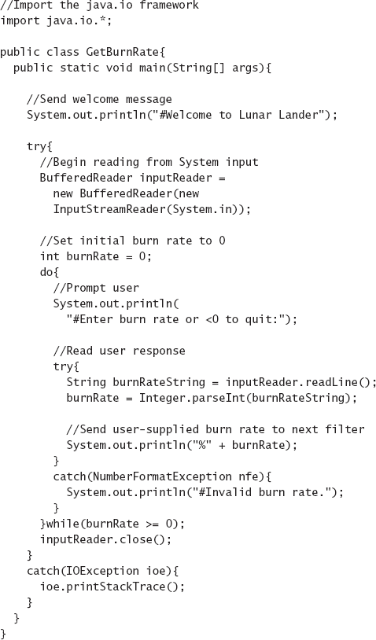
Figura 9-5. O filtro GetBurnRate para módulo lunar.
A Figura 9-7 mostra a implementação do filtro DisplayValues para o módulo lunar. As semelhanças estruturais com os outros dois filtros são novamente evidentes aqui — o filtro lê linhas da entrada do sistema e as grava na saída do sistema. O propósito desse filtro é simplesmente formatar dados para saída no console. Mensagens de usuário não formatadas de filtros anteriores são enviadas diretamente, enquanto os valores dos dados são anotados com descrições para saída. Aqui, caracteres de controle são analisados na entrada, mas nenhum de caracteres de controle é escrito no fluxo de saída; A aplicação assume que é o filtro final na aplicação e que os dados de saída são destinados a serem exibidos em um console, e não como entrada para outro filtro de aplicação.
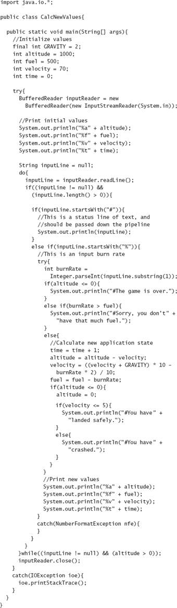
Figura 9-6. O filtro CalcNewValues para módulo lunar.
Juntos, esses três filtros compõem a aplicação Lunar Lander. Uma tarefa permanece: determinar como instanciar e conectar a aplicação. Isso é feito facilmente na linha de comando:
java GetBurnRate | java CalcNewValues | java DisplayValues
Essa linha de comando invoca os três filtros como processos separados. (A necessidade da invocação do java em cada processo é um artefato de como a Máquina Virtual Java funciona: cada processo é uma instância da máquina virtual que executa a classe passada como o primeiro parâmetro para o comando Java.) A entrada do console é enviada para o fluxo de entrada do sistema do filtro mais à esquerda (GetBurnRate). A saída do GetBurnRate é canalizada para a entrada do CalcNewValues. A saída do CalcNewValues também é canalizada para a entrada do DisplayValues, e a saída para o console vem do fluxo de saída do sistema desse filtro.
Reflexões sobre a implementação do módulo lunar Pipe-and-Filter
A estrutura de arquitetura (java.io) nesta implementação do Lunar Lander oferece vários serviços úteis para a aplicação. Inclui várias classes para leitura e gravação nos fluxos de entrada e saída do sistema (como BufferedReader). Essas classes permitem que dados sejam lidos e gravados em fluxos de caracteres, como os fluxos de entrada e saída do sistema, de diferentes maneiras: como caracteres individuais, linhas, inteiros e assim por diante. Isso permite que a implementação foque mais na funcionalidade da aplicação e menos nas restrições do estilo arquitetônico.
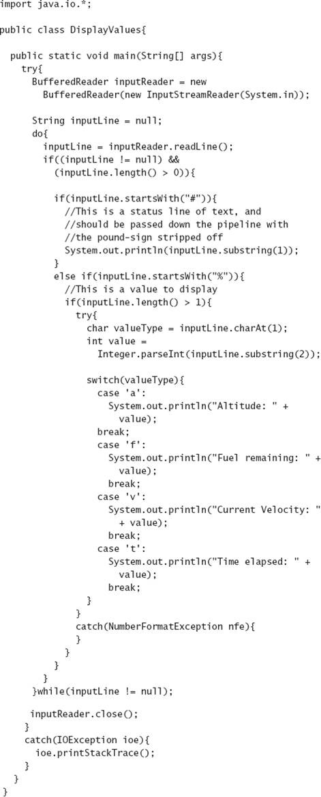
Figura 9-7. O filtro DisplayValues para módulo lunar.
O próprio sistema operacional fornece os conectores de tubos, bem como a política de concorrência para a arquitetura. As implementações de filtros nesse sistema estão intimamente alinhadas com as propriedades do framework subjacente e do sistema operacional, embora isso não seja necessariamente óbvio ao ler o código. Por exemplo, os filtros assumem que vão rodar simultaneamente. Em alguns sistemas operacionais, como o MS-DOS, aplicações pipe-and-filter realmente rodam em modo batch, coletando toda a saída de cada filtro antes de enviá-la para o próximo filtro. Se essa versão do Lunar Lander operasse em modo batch, as mensagens do usuário enviadas pelos dois primeiros filtros não seriam emitidas pelo terceiro filtro até que toda a entrada do primeiro filtro estivesse concluída. A aplicação não funcionaria corretamente nessa circunstância. Além disso, os filtros assumem que as linhas escritas para o fluxo de saída do sistema serão automaticamente limpas para o próximo filtro. Se isso não fosse verdade, as mensagens de saída apareciam tardias e a aplicação operava de forma quebrada ou confusa. Essas possíveis suposições inadequadas são sutis, mas os desenvolvedores devem estar cientes delas para determinar se uma aplicação funcionará ou não como desejado.
A atividade de implementação é frequentemente o momento em que arquiteturas subespecificadas ou deficientes se tornam evidentes. Por exemplo, a arquitetura (admitidamente simples) do Lunar Lander com tubo e filtro especifica quais dados devem passar de filtro em filtro, mas não o formato desses dados. Um componente que se comunicava usando codificação de dados baseada em XML, embora fosse compatível com a arquitetura, não interoperaria com os componentes de filtro implementados acima. Claramente, essa arquitetura não foi desenvolvida a ponto de a interoperabilidade dos componentes poder ser inferida apenas a partir da arquitetura. Um descompasso entre formatos de dados XML e orientados a linha seria facilmente detectado durante a integração do sistema, mas bugs mais sutis podem ser ainda mais perigosos. Por exemplo, no caso do Mars Climate Orbiter, um descompasso de interface entre unidades métricas e imperiais foi uma causa substancial para a perda do orbitador.
Implementando o módulo lunar no estilo C2 usando a
estrutura leve C2
Uma arquitetura de módulo lunar no estilo C2 mostrada na Figura 9-8 é diferente da versão de módulo lunar com tubo e filtro. Primeiro, a funcionalidade do aplicativo é dividida de forma diferente. Aqui, um componente de estado do jogo mantém todo o estado do jogo e transmite atualizações para outros componentes. Um componente de lógica de jogo lê o estado do jogo, calcula um novo estado e atualiza o componente do estado do jogo com esse estado. O componente GUI é responsável por ler novos valores de taxa de queima do usuário e mantê-lo informado sobre o estado atual do jogo. A mudança mais significativa em relação à versão pipe-and-filter é a adição de um componente de clock, que emite eventos de "tick" ou mensagens em intervalos periódicos. Isso muda substancialmente o caráter do jogo; em vez de esperar indefinidamente por um novo valor de taxa de queima do usuário, como na versão pipe-and-filter, esta versão do Lunar Lander é jogada em tempo real. Nesta versão, o estado do jogo muda sempre que o relógio avança, e não quando novos valores de taxa de queima são inseridos. Aqui, o usuário pode atualizar a taxa de queima atual quantas vezes desejar entre os ticks. Quando o relógio avança, o valor atual da taxa de queima é usado para calcular o novo estado do jogo.
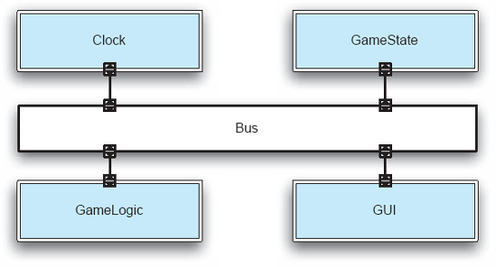
Figura 9-8. Lunar Lander no estilo arquitetônico C2.
Existem muitos frameworks C2 para diferentes linguagens de programação e plataformas. Assumindo que queremos implementar o sistema em Java, ainda precisamos escolher entre frameworks como o Lightweight C2 Framework e o Flexible C2 Framework. Como resulta em um código componente um pouco mais simples, usaremos o Framework C2 Leve para essa implementação.
Como no exemplo do pipe e filtro, podemos implementar esses componentes em qualquer ordem, mas a ordem escolhida tem consequências práticas. Devido às regras de independência do substrato (isto é, de camadas) em C2, componentes inferiores podem fazer suposições sobre os serviços fornecidos pelos componentes superiores, mas componentes superiores não podem fazer suposições sobre componentes inferiores. (Note que isso é inverso das representações tradicionais em camadas ou máquinas virtuais, onde as camadas superiores dependem das camadas inferiores.) Isso significa que os componentes mais altos não têm dependências, e que os componentes inferiores são progressivamente mais dependentes. Adotaremos uma estratégia de implementação de menos dependente primeiro,[11] que significa que os componentes mais altos são implementados primeiro.
O código do componente GameState é mostrado na Figura 9-9. A primeira linha de código importa o pacote c2.framework, que pertence ao Lightweight C2 Framework. A declaração de classe mostra que a classe GameState estende a classe base ComponentThread. Essa classe base é estendida por todas as classes de componentes que rodam em seu próprio thread de controle (como é padrão em sistemas do estilo C2). Essa classe base fornece o código necessário para que o componente receba e envie solicitações e notificações, bem como o código de threading e sincronização necessário para coordenar com os outros componentes e conectores.
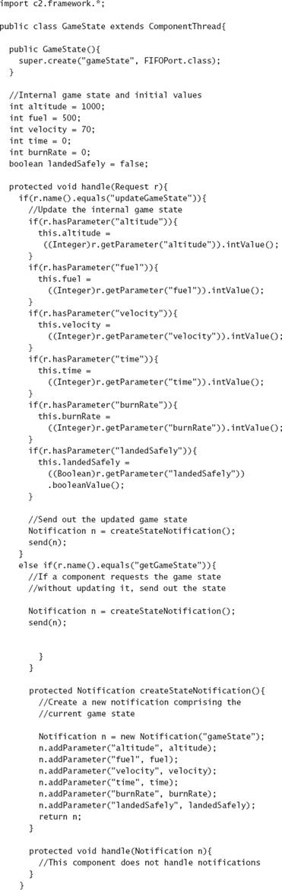
Figura 9-9. O componente GameState no C2.
O primeiro método, GameState(), é um construtor simples de boilerplate. Esse framework C2 exige que cada componente e conector receba um nome (neste caso, gameState), assim como a classe que irá implementar as portas (ou seja, filas de mensagens) usadas para trocar mensagens com conectores conectados. Para simplificar, todos os componentes e conectores dessa arquitetura usarão portas FIFO (first-in, first-out) — ou seja, filas comuns.
O próximo bloco de código declara um conjunto de variáveis membros que representam o estado do jogo, incluindo velocidade, altitude, combustível restante, taxa de queima atual, se o módulo de pouso pousou com segurança, e assim por diante. Essas informações serão lidas e atualizadas conforme o jogo for jogado.
Cada componente e conector no Lightweight C2 Framework tem duas responsabilidades principais: lidar com requisições (mensagens que viajam para cima na arquitetura e chegam na porta inferior) e lidar com notificações (mensagens que viajam para baixo na arquitetura e chegam à porta superior).
O próximo método, handleRequest(), é chamado automaticamente pelo framework quando uma solicitação chega para esse componente. Lembre-se de que, no Lightweight C2 Framework, todas as requisições e notificações têm a mesma estrutura: um nome de string de caracteres, além de um conjunto de propriedades do par nome-valor. Esse método lida com duas solicitações: uma solicitação updateGameState e uma solicitação getGameState. Ao receber um pedido updateGameState, o componente lê do conjunto de propriedades vários novos valores de estado correspondentes a elementos do estado do jogo. Após atualizar o estado do jogo com os novos valores, o componente sempre cria e emite uma nova notificação gameState contendo todos os valores atualizados de estado. Ao receber uma solicitação getGameState, o componente simplesmente cria uma nova notificação de estado do jogo com os valores atuais e a envia. Enviar uma solicitação ou notificação no framework Lightweight C2 é simples. Primeiro, um novo objeto de Solicitação ou Notificação é criado, recebe um nome e é preenchido com propriedades. Esse objeto pode ser passado para um método send() presente na classe base abstrata, neste caso, ComponentThread. O framework roteia a mensagem de forma adequada.
O método handleNotification() para esse componente está vazio; Este componente não gerencia notificações. Como estamos cientes, do ponto de vista arquitetônico, de que nenhum componente será conectado acima desta, sabemos que ela não receberá nenhum.
Esse componente é totalmente reativo. Ele permanece inativo até que uma solicitação chegue em sua porta inferior. Se a solicitação for de um tipo reconhecido (updateGameState ou getGameState), então o componente reage, atualizando seu estado interno e enviando uma notificação de novo estado, ou simplesmente enviando o estado atual do jogo. Este é um padrão relativamente típico de interação para componentes de estado em sistemas do estilo C2. Também vale notar que esse componente atua inteiramente como um armazenamento de dados — a validação e o processamento de dados são feitos em outros componentes (principalmente o componente GameLogic). Manter essa separação permite que arquitetos troquem mais facilmente diferentes estruturas de dados ou componentes de lógica de jogos.
O código do componente Clock é mostrado na Figura 9-10. A estrutura básica desse componente é semelhante à do componente GameState — esse componente também estende o ComponentThread e inclui o mesmo construtor boilerplate. Diferente do componente GameState, porém, o Clock não lida com solicitações nem notificações. Sua função é simplesmente emitir notificações de tick em um intervalo pré-definido. Isso é feito por meio da criação de uma nova thread de clock no método start() do componente. O método start() é outro método distinto no Framework Lightweight C2; ele é chamado automaticamente pelo framework quando a aplicação inicia. Nessa implementação, a thread de clock cria e emite uma nova notificação de tick a cada cinco segundos (5000 milissegundos). O uso de uma thread de clock separada é necessário porque a thread interna do componente (fornecida pela classe base ComponentThread) é usada apenas para lidar com notificações e solicitações — tentar cooptá-la para enviar ticks interferiria no comportamento de manuseio de mensagens do componente.
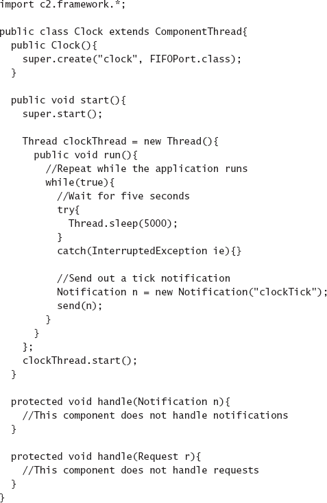
Figuras 9-10. O componente Clock em C2.
O código do componente GameLogic é mostrado na Figura 9-11. Este componente é o mais complexo dos componentes do módulo C2 do módulo lunar. Estruturalmente, é muito semelhante ao componente GameState. Em vez de responder a solicitações dos componentes inferiores, no entanto, ele reage às notificações vindas dos componentes superiores. O GameLogic responde a dois tipos de notificações. A primeira é uma notificação gameState do componente GameState. Sempre que o componente GameLogic é notificado de que o estado do jogo mudou, ele atualiza os valores internos de estado que são usados para cálculos posteriores. Para um jogo simples como Lunar Lander, onde quase todo o estado do jogo é usado pelo único componente GameLogic, manter cópias separadas do estado do jogo nos componentes GameState e GameLogic pode parecer redundante. Em aplicações mais complexas, entretanto, componentes lógicos raramente precisam de todo o estado do jogo; em vez disso, eles manteriam apenas as partes do estado necessárias para realizar seus próprios cálculos. Uma pergunta adicional que pode surgir para desenvolvedores familiarizados com programação procedural ou orientada a objetos é por que o componente GameLogic não simplesmente consulta o componente GameState para obter dados quando necessário. A resposta está no estilo arquitetônico — em C2, tais consultas síncronas de componente a componente não são permitidas.
A segunda notificação tratada pelo componente GameLogic é um tique-taque do clock do componente Clock. Lembre-se de que essa versão do Lunar Lander não é impulsionada pela entrada do usuário sobre novas taxas de queima, mas pelo tique-taque do relógio em tempo real. Quando ocorre um tique-taque de clock, o estado mais recente do jogo armazenado no componente GameLogic é usado para calcular o próximo estado — queimando alguma quantidade de combustível, descendo (ou ascendendo) uma certa distância, e assim por diante. Esse estado é então enviado para o componente GameState em uma solicitação updateGameState, que vimos tratada por esse componente acima.
Um detalhe adicional na implementação do GameLogic é o método start(). Ao iniciar, o componente GameLogic envia uma solicitação assíncrona para cima para o componente GameState para o estado inicial do jogo. Sem isso, o cálculo que ocorre no primeiro movimento do clock pode ser baseado em valores incorretos (ou seja, totalmente zero) inicializados no componente GameLogic.
Efetivamente, o comportamento do componente GameLogic pode ser resumido pelo statechart na Figura 9-12. O componente inicia e envia uma solicitação getGameState para cima. Depois, ele fica em repouso esperando notificações. Quando uma notificação GameState é recebida, o estado interno do componente é atualizado. Quando uma notificação clockTick é recebida, um novo estado do jogo é calculado e um pedido para atualizar o estado do jogo é enviado para cima.
O código do componente GUI do módulo lunar está mostrado na Figura 9-13. Esse componente cuida de toda a interação com o usuário. Essa implementação em particular utiliza rotinas simples de entrada e saída baseadas em console (ou seja, em texto). O componente de interface gráfica tem duas responsabilidades principais. Primeiro, cria uma thread independente para ler as entradas do usuário — neste caso, taxas de queima — do console. Sempre que uma nova taxa de queima é lida, ela é envolvida em uma solicitação updateGameState e enviada para cima. Novamente, uma thread separada é necessária aqui para evitar interferência com a thread de processamento de mensagens que pertence ao componente. Segundo, o componente GUI escuta notificações de gameState. Ao receber um estado atualizado do jogo, o componente formata e escreve o estado no console.
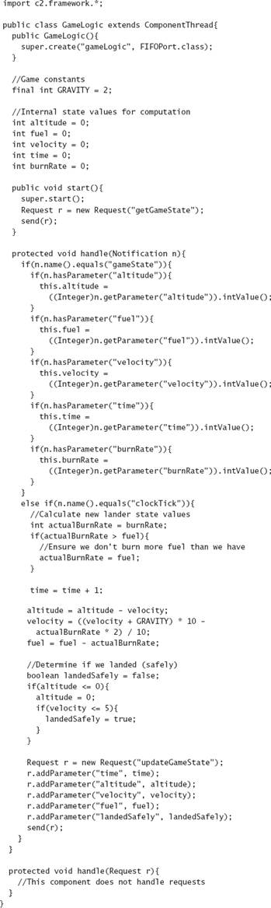
Figura 9-11. O componente GameLogic no C2.
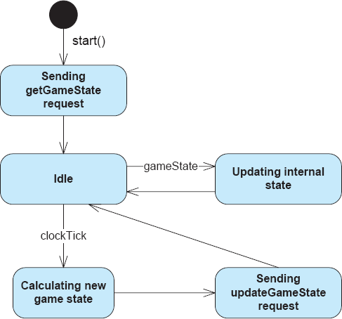
Figuras 9-12. Statechart descrevendo o comportamento do componente GameLogic em C2.
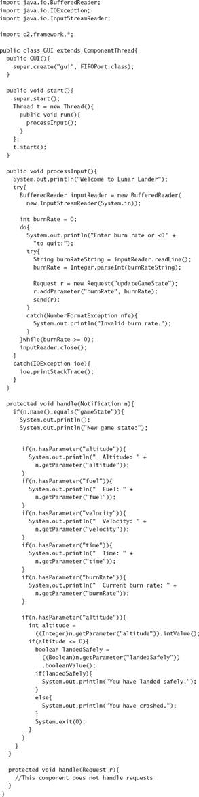
Figura 9-13. O componente de interface gráfica no C2.
Agora que todos os componentes foram codificados, eles precisam ser instanciados e conectados. Isso é feito por meio de um programa principal de bootstrap mostrado nas Figuras 9-14. No exemplo do pipe e filtro, conseguimos usar o shell da linha de comando para instanciar e conectar os componentes. Para uma aplicação C2, devemos escrever esse programa bootstrapping nós mesmos, recorrendo aos serviços do Lightweight C2 Framework para instanciar e conectar os componentes. O próprio bootstrapper é relativamente simples. Primeiro, é criada uma Arquitetura, o objeto do framework C2 que representa uma estrutura arquitetônica. Em seguida, instâncias de cada um dos componentes são criadas, junto com um único conector chamado barramento. Os componentes e conectores são adicionados à Arquitetura, e então os links entre eles (chamados de Soldaduras na linguagem C2) são criados. Com tudo conectado, é chamado o método start() da Arquitetura, que cria threads internas, chama o método individual start() de cada componente e conector, e executa outras tarefas necessárias para iniciar a aplicação.
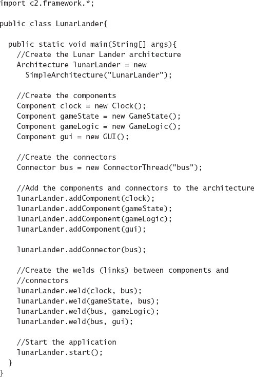
Figuras 9-14. O programa principal do Lunar Lander em C2.
ASSUNTO FINAL
É imperativo que, na medida do possível, as decisões de design na arquitetura sejam refletidas no sistema implementado. Conflitos ou descompassos são marcas registradas do desvio arquitetônico e da erosão. Às vezes, essas divergências são óbvias e conhecidas pelas partes interessadas do sistema, e documentação adicional desses casos pode ajudar a mitigar os riscos ou fornecer planos para trabalhos futuros que restableçam a arquitetura e a implementação. Às vezes, porém, não estão, e as partes interessadas permanecem alheias ao problema. Isso geralmente se agrava nas fases de manutenção do sistema, quando é conveniente atualizar a implementação sem voltar e atualizar modelos arquitetônicos para corresponder. De certa forma, é mais prejudicial ter informações conflitantes na arquitetura e na implementação do que ter uma arquitetura subespecificada, já que pelo menos uma arquitetura subespecificada não enganará as partes interessadas.
Manter um mapeamento consistente entre arquitetura e implementação quase nunca é fácil, e várias técnicas podem ser usadas para isso. Os mapeamentos mais fortes são possíveis quando modelos arquitetônicos se tornam parte da implementação do sistema e estão intimamente conectados a artefatos de implementação por meio de mapeamentos explícitos embutidos nos modelos para elementos implementados em frameworks de implementação de arquitetura. Essa estratégia funciona bem para decisões concretas de projeto, como decisões estruturais, mas é mais difícil para decisões de projeto mais abstratas que envolvem, por exemplo, propriedades não funcionais. Nesse caso, as partes interessadas devem negociar e tomar decisões sobre como se convencerão de que sua arquitetura é adequadamente refletida em sua implementação. Sem dúvida, isso envolverá um espectro combinado de estratégias, desde revisão por pares até links de rastreabilidade entre documentos e o uso de frameworks de implementação de arquitetura.
Nos capítulos anteriores, focávamos em atividades de design — design arquitetônico, modelagem, visualização e análise. Neste capítulo, discutimos como passar do design para a implementação. Uma vez implementado o sistema, ele deve ser implantado para seus usuários. Esse é o foco do próximo capítulo. Como veremos, manter modelos arquitetônicos com mapeamentos fortes para implementações também é útil em atividades pós-implementação.
O Caso de Negócios
Em geral, um bom projeto deve resultar em um bom sistema. A maneira de maximizar suas chances de obter um bom sistema a partir de um bom projeto é usar práticas cuidadosas para mapear sua arquitetura ao seu código. Um pequeno investimento em uma boa estrutura de arquitetura reutilizável pode trazer consistência ao longo de um projeto e ao longo de sua vida útil.
As tecnologias de geração são especialmente poderosas para reduzir custos e minimizar o desvio e a erosão arquitetônicas. Embora possa não ser uma solução milagrosa, gerar até mesmo implementações parciais a partir da arquitetura é sempre muito superior a fazer a conexão manualmente, especialmente se a engenharia de software de ida e volta estiver em vigor. Cada linha de código escrita por um programa, e não por um programador, é dinheiro no banco da conta.
Os custos de manutenção são os mais altos em qualquer projeto bem-sucedido de engenharia de software (mais de 50%). Esses custos são agravados por código espaguete, mudanças post hoc que (muitas vezes sem saber) violam os princípios de design estabelecidos no início do projeto e pela falta de compreensão clara do sistema. Quando os princípios de design são violados, as qualidades de software antecipadas e imbuídas pelo design podem não se manifestar no sistema final implementado.
Bons mapeamentos entre arquitetura e implementação ajudam a mitigar riscos, especialmente aqueles causados pela rotatividade de pessoal. A rotatividade é inevitável em qualquer esforço de desenvolvimento, e uma arquitetura bem definida com uma implementação correspondente melhorará dramaticamente a capacidade do novo pessoal de ser eficaz em um projeto antigo.
PERGUNTAS DE REVISÃO
EXERCÍCIOS
LEITURA ADICIONAL
Este capítulo analisa os frameworks de implementação de arquitetura como método primário de mapear decisões de design arquitetônico para artefatos de implementação. Surpreendentemente, pouco foi escrito sobre tais estruturas caracterizadas dessa forma; Sam Malek et al. (Malek, Mikic-Rakic e Medvidovi' 2005) é uma exceção notável. No entanto, existem muitos sistemas de software que se assemelham muito a frameworks de implementação de arquitetura, sem o foco explícito em estilos. Alguns deles, como o framework padrão de I/O em C (Kernighan e Ritchie 1988) e os pacotes Java I/O (Harold 2006) e New I/O (Hitchens 2002), são frameworks de implementação de arquitetura disfarçados, fornecendo os serviços de um framework sem serem explicitamente identificados como tal.
Middlewares como CORBA (Object Management Group 2001), COM e suas variantes (Sessions 1997), JavaBeans (JavaSoft 1996), Java RMI (Grosso 2001), implementações do Java Message Service (JavaSoft 2001) e outros sistemas de passagem de mensagens como MQSeries (IBM 2003) e MSMQ (Houston 1998) são frequentemente usados como frameworks de implementação de arquitetura. No entanto, Elisabetta Di Nitto e David Rosenblum (Di Nitto e Rosenblum 1999) destacaram de forma perspicaz o fato de que middleware induz um estilo arquitetônico em aplicações que o utilizam.
Uma tendência recente que está crescendo em popularidade é o uso extensivo de técnicas generativas, particularmente sob o nome de Arquitetura Orientada por Modelos (Mukerji e Miller 2003), que podem gerar implementações total ou parciais por meio de modelos. Abordagens generativas já foram identificadas como balas de prata antes, e o tempo dirá se a Arquitetura Orientada por Modelos corresponde à sua promessa inicial.
[10] Quando implementações do C estão disponíveis em um sistema operacional que suporta concorrência de processos, como UNIX ou Windows, o escalonador de processos do sistema operacional geralmente será usado para atribuir tempo de CPU a cada filtro. No entanto, pipe-and-filter também foi suportado em sistemas operacionais de processo único como o DOS: nesse caso, os filtros rodam inteiramente em sequência e a saída de cada filtro é armazenada em um arquivo temporário no disco rígido. Isso transforma efetivamente todas as aplicações pipe-and-filter em aplicações sequenciais em lote.
[11] Isso é normalmente chamado de estratégia de implementação bottom-up, mas essa terminologia pode ser confusa em arquiteturas C2, onde os componentes menos dependentes são representados no topo da visualização gráfica canônica.